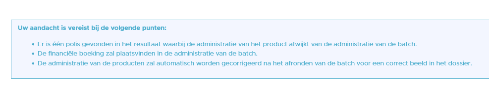
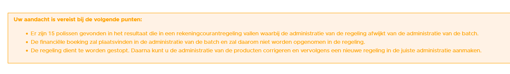
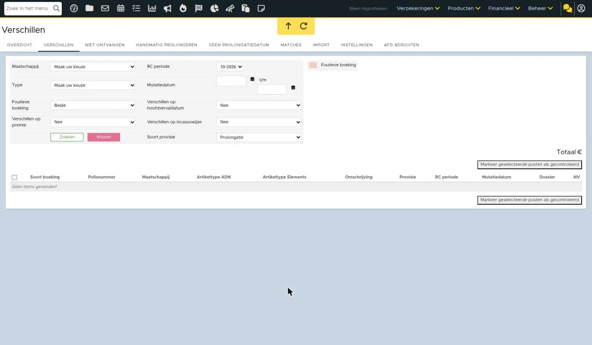

ADN batch verwerken
In dit artikel leggen we uit hoe je een ADN batch verwerkt. Ook staat hierin een stap hoe je een batch met mutaties van verzekeringen verwerkt.
Overzicht batches
Om de ADN batches te verwerken open je eerst de module. Deze is te bereiken via Financieel - Prolongatie import of via de tegel Binnengekomen berichten op het dashboard.
Status
Na het openen van de module kom je uit in het overzicht. Hier staan niet alle afgeronde batches. Zodra er een batch binnenkomt wordt er direct het proces gestart om een offertematch en een controle journaalpost te maken. Tijdens dit proces is het niet mogelijk om de batch te openen. Bij de status van de batch staat dan 'Provisie overnemen'. Is dit proces afgerond dan is de status 'Controle journaalposten aangemaakt'. De regel krijgt een blauwe kleur als alle controle- journaalposten zijn aangemaakt.
Foutmelding
Het kan zijn dat de batch niet verwerkt kan worden, de batch blijft dan in de wachtrij staan. En er verschijnt een oranje driehoek voor de batch. Dit kan verschillende oorzaken hebben. Het kan zijn dat er geen bijbehorende organisatie of dagboek gevonden kan worden. Hier lees je hoe je dit oplost. Bij andere oorzaken wordt aangegeven met support contact op te nemen.
Batch verwerken
Hieronder lees je hoe je de batch verder kunt verwerken.
1. Open batch
Om een batch te openen klik je op naam van de maatschappij of op het vergrootglasicoon.
Wanneer je de batch hebt geopend, kom je terecht in de controlelijst. In deze controlelijst zie je alle posten staan.
Kolommen
Match
Deze geeft aan of er een match is met het dossier. Zo ja, dan staat er een groen vinkje. Als er geen match is, dan staat er een blauw koppelicoon. Via die blauwe koppelicoon kan je de post handmatig matchen aan het dossier. Is er een conflict aanwezig op het polisonderdeel dan staat hier een oranje driehoek. Je dient dan eerst het conflict op te lossen om de polis goed te kunnen matchen. Zie verder in dit artikel hoe je dit kunt doen.
Bij TP incasso posten kan het zijn dat hier een rood papiericoon staat. Dit zijn de niet ontvangen posten die wel verwacht worden door het systeem. Hier lees je er meer over.
Polis toevoegen
In sommige gevallen is het mogelijk om vanuit de batch nieuwe polissen aan het dossier toe te voegen. Hier lees je er meer over.
Polis ontkoppelen
De polis ontkoppelen kan via dit icoon:
De match wordt dan ontkoppeld. Ook verdwijnt de match uit het tabblad Matches. Vervolgens kan je onder het tabblad Match de polis opnieuw handmatig koppelen.
Afwijking
Hierin staat een rekenmachine. Je kunt op de rekenmachine klikken om meer informatie van de post te verkrijgen. Ook kan je de post hier markeren als foutieve boeking. De regel wordt dan rood. De post wordt enkel in de batch gemarkeerd als foutieve boeking, verder doet deze knop niets. Via het rekenmachine kan je de markering ook weer ongedaan maken. In sommige gevallen staat onder de rekenmachine ook de knop 'Provisie is incorrect'. Als je hier op klikt dan wordt de provisie uit het aangemaakte mutatievoorstel gehaald en wordt dit in de productkaart niet aangepast.
Boeking
Een vergrootglas: controle journaalpost is gemaakt
Een uitroepteken: de controle journaalpost kan niet worden gemaakt
Rode pijltjes: de rode pijltjes geven aan dat het een post is die voor deze periode reeds is geprolongeerd. Deze dubbele post wordt niet financieel verwerkt en de productkaart wordt niet aangepast. Je kunt hierop filteren door middel van het filter 'Dubbele posten'. Het volgende kan aan de orde zijn:
- Deze post is in een andere batch met dezelfde periode al verwerkt.
- Ook kunnen de pijltjes verschijnen door mismatching. Deze mismatching vindt meestal plaats in het pakket. De polis met de rode pijltjes is op een eerder moment gekoppeld aan een andere polis binnen het pakket. Deze match wordt onthouden in het tabblad Matches. Als de batch binnenkomt wordt er gematcht op de polis. Vervolgens wordt er bij de andere polis ook geprobeerd een match te maken. Doordat hier al een match op is, wordt bij de post rode pijltjes geplaatst.
Voorbeeld: je hebt polis 112010. Deze is op een eerder moment (handmatig) gekoppeld aan polis 112011. Er komt een nieuwe batch binnen met daarin zowel polis 112010 en 112011. 112011 wordt gematcht aan de polis. Vervolgens wilt eBlinqx 112010 ook matchen aan 112011 want dit staat zo in het tabblad Matches. Dit gaat niet, eBlinqx 'ziet' dit als een post die al in dezelfde periode is binnengekomen en plaatst rode pijltjes.
De oplossing: De oplossing is om de mismatching via het tabblad Matches op te zoeken. In het voorbeeld is dit 112010. Hier ontkoppel je de polis door middel van het rode polisicoon. Je gaat terug naar de batch. In de batch maak je de koppeling met de polis/het dossier ongedaan. Je kunt dan daarna de polis aan het juiste polisonderdeel matchen via het koppelicoon.
Oranje icoon: het boekicoon, playicoon of uitroepteken is oranje (met mouse-over dat het product in een andere administratie staat). De batch wordt geboekt in de administratie waarop deze binnenkomt. Bij de posten waarbij dit oranje icoon staat staat in het product een andere administratie dan die van de batch. Bij het verwerken van de batch wordt de administratie in het product aangepast. Via filters kan je op deze posten filteren.
Beoordeling
Indien het een mutatiebatch betreft dan staan er in de kolom Beoordeling vinkjes. Met deze vinkjes kan je aangeven of een mutatie is gecontroleerd. Het vinkje wordt dan blauw. Zo kan je in één oogopslag zien welke posten wel of niet gecontroleerd zijn.
Filters
Naast de posten staan verschillende filters die je kan toepassen om te zoeken binnen alle posten.
Wanneer je zoekt op polisnummer en 'Toon gehele pakket' op 'Ja' dan wordt alleen het polisnummer getoond die in het AFD bericht onderdeel is van een pakket. Losse posten die in het AFD bericht niet gekoppeld zijn aan een pakket worden met dit filter niet getoond. Je dient dan 'Toon gehele pakket' op 'Nee' te zetten. Via 'Verberg filters' kan je de filters verbergen.
Tabblad posten
Vanuit de controlelijst kan je naar het tabblad posten. Ook in dit tabblad staan alle posten met daarachter verschillende symbolen:
- Koppelicoon met doorheen: polismatch is gemaakt
- Koppelicoon: polismatch is niet gemaakt
- Vergrootglas: controle journaalpost is gemaakt
- Uitroepteken: controle journaalpost kan niet aangemaakt worden
- Groen plusje: eBlinqx heeft het pakket gevonden, maar niet het polisonderdeel. Via het groene plusje kan je dit polisonderdeel aanmaken
- Vergrootglas met plusicoon erin voor de naam: hier kan je extra informatie vinden over de post en bijbehorende klant
Ook op dit tabblad staan verschillende filters om te zoeken binnen de posten.
2. Match posten
Voor het verder verwerken van een batch dient er een offertematch te zijn. Indien er in de kolom match geen groen vinkje staat is er geen match. Met het filter ADN match kan je de posten die niet gematcht zijn naar voren te halen door deze op 'nee' te zetten. Ook kan je in het tabblad Posten filteren op 'Polismatch nee'.
De vervolgstap is om ervoor te zorgen dat deze wel gematcht worden. Controleer eerst of de polis opgevoerd is in eBlinqx door naar het desbetreffende dossier te gaan. eBlinqx matcht de posten op polisnummer en maatschappij, het is dus belangrijk dat de maatschappij en polisnummers overeenkomen. Pas indien nodig een van deze velden aan of voeg de polis toe. Lees hier meer over de voorwaarden om te matchen.
Nadat de polissen zijn hersteld/toegevoegd, klik je in de batch in de controlelijst op de knop 'Polissen opnieuw matchen/Controle journaalpost maken'.
eBlinqx gaat nu opnieuw de gehele batch matchen. Ook wordt het proces om controle journaalposten te maken direct gestart. Afhankelijk van de grootte van de batch kan dit even duren. Als dit proces klaar is dan is de status van de batch 'Controle journaalposten aangemaakt'
Handmatig matchen
Vanuit het tabblad posten en controlelijst is het mogelijk om de post handmatig te matchen. Indien hier een koppelicoon staat dan is de post niet gematcht. Er worden dan ook geen controle journaalposten aangemaakt.
Om de posten handmatig te matchen klik je op het koppelicoon achter de post en zoek je de polis op.
Wanneer een post gematcht is, verandert in de postenlijst het koppelicoon naar een koppelicoon met streep. In de controlelijst veranderd het koppelicoon naar een groen vinkje.
Bij het opnieuw (handmatig) matchen van de polissen wordt ook direct het proces gestart om controle journaalposten aan te maken. Let op: door dit automatisch proces is de knop 'provisie overnemen van de maatschappij' niet meer aanwezig. Het is daarom niet meer mogelijk om posten tussentijds te boeken. Het boeken vindt pas plaats bij het afronden van de batch.
Controle journaalposten
De controle journaalposten laten zien welke journaalpost er wordt gemaakt als de batch afgerond wordt en de boeking daadwerkelijk geboekt wordt. Deze boeking wordt direct geboekt op de rekening-courant maatschappij (1240).
Uitroepteken
De controle journaalpost wordt gemaakt aan de hand van een vergoedingsgroep. Indien er meerdere dezelfde vergoedingsgroepen of geen vergoedingsgroepen aanwezig zijn, wordt de controle journaalpost niet aangemaakt. Er verschijnt dan geen vergrootglas maar een uitroepteken.
Let op! De matching is belangrijk om de polisgegevens aan te vullen in de productkaart én voor de boekhouding. Indien de controle journaalpost niet aanwezig is, dan wordt de post geboekt op grootboekrekening '1750 Onbekende ontvangsten maatschappijen'. Als je dat wilt voorkomen, moet je eerst controleren waarom er geen match is.
Bij het uitroepteken staat een melding waarom de controle journaalpost niet gemaakt kan worden. Ook dit artikel geeft meer informatie om deze niet gematchte posten te laten matchen.
€0,00-posten
In de ADN batch kunnen €0,00 posten staan. Deze zijn uitgegrijsd. Dit zijn posten zonder financiële consequenties. Er wordt geen factuur of boeking aangemaakt bij het verwerken van de ADN batch. Enkel wordt de productkaart bijgewerkt. Deze posten staan op de borderel. Het kan zijn dat erop pakketniveau kosten zitten. Deze kosten op pakketniveau worden bij alle posten getoond, deze kunnen dus ook getoond worden bij een €0,00 post, maar deze komen maar 1x voor op de factuur. De factuur is ook op pakketniveau. Hierdoor kan het zijn dat de €0,00 post wel op de factuur genoemd wordt, want als onderdeel van het pakket wordt de €0,00 post hierin wel meegenomen. Van €0,00 posten wordt er geen controle journaalpost gemaakt.
3. Los conflicten op
Wanneer een binnengekomen mutatie of prolongatie niet overeenkomt met het mutatievoorstel dat al in het bijbehorende klantdossier stond, ontstaat er een mutatieconflict. Je ziet hiervan een melding bovenin in je scherm én een oranje driehoek in de 'Match' kolom (per polis).
Klik op de oranje driehoek om het mutatieconflict op te lossen.
4. Rond batch af
Via de controlelijst knop 'Controlelijst afronden' kan je de batch afronden.
Wanneer je de batch afrondt worden de posten daadwerkelijk geboekt. De status van de batch is dan 'Afgerond'. De batch komt in het overzicht onder afgeronde batches te staan. Deze kan je terugvinden als je in het filter 'Afgerond' op 'Ja' zet. Wanneer je een afgeronde batch opent, zie je dat de batch is afgerond. Daarnaast kan je door middel van het boekicoon in de kolom Boeking direct naar het boekstuk gaan.
Let op: de ingestelde settings bepalen of het mogelijk is om de batch af te kunnen ronden als er niet overal een polismatch en/of controle journaalpost is gemaakt. Afhankelijk van de settings kan de volgende melding verschijnen:
Bericht bij prolongatie op hoofdvervaldatum
Het is mogelijk om via de workflow een notificatie te krijgen of de klant te informeren wanneer er een prolongatie op hoofdvervaldatum is verwerkt. Een prolongatie op hoofdvervaldatum is verwerkt bij het afronden van de ADN batch. Na het afronden van de batch krijgt de workflow een seintje. Je kan zelf bepalen wat voor acties er dan uitgevoerd moeten worden, bijvoorbeeld een taak of e-mail aanmaken.
Wil je hiervan gebruik maken? Stuur dan een e-mail naar support-eblinqx@blinqx.tech.
Financiële verwerking
De posten in de ADN batch worden altijd geboekt in de administratie waarop de batch is binnengekomen. Staat er in het product een afwijkende administratie ingesteld dan die van de batch dan wordt bij het verwerken van de batch de administratie van het betreffende product aangepast naar de administratie waarin de batch is binnengekomen. Dit als de financiële verwerking aan staat en de polis niet valt binnen een lopende rekening-courant regeling. Je wordt hierop geattendeerd door middel van een melding.


Wanneer de polis binnen een rekening-courant regeling valt dan wordt de afwijkende administratie in het product niet aangepast. De financiele verwerking zal plaatsvinden in de administratie waarin de batch is binnengekomen en zal daarom niet worden opgenomen in de regeling. De regeling dient te worden gestopt. Vervolgens moet de klant de administratie in de producten corrigeren en dan een nieuwe RC regeling aanmaken in de juiste administratie (die van de batch). Je wordt hierop geattendeerd door middel van een oranje melding.


Lees hier meer over de financiële verwerking.
Zo ziet het er nu uit in eBlinqx Connect
